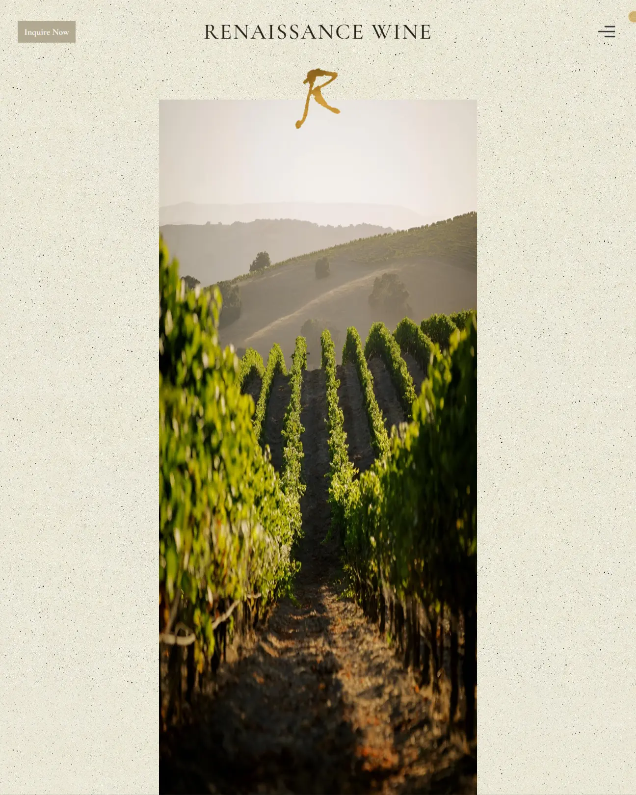

Food & Beverage · Wine Importer / Website
Renaissance Wine.
From the vineyards of Lake Garda to your glass.
Importer website & digital direction
Positioning, art direction, UX/UI, editorial design
Bring a family vineyard's story to life for US buyers and tasting guests

Renaissance Wine01 / The challenge
A real story.
Bottled in a template.
Renaissance Wine imports the wines of a single family estate on Lake Garda into the US — Bardolino, Chiaretto, and the DOC-certified reds and rosés that have been made by the Marchesini family for generations. The wines are honest, rustic, and genuinely of place. The importer's business is built on two things: getting those bottles into American restaurants and independent wine shops, and running Italian wine tastings across the US with a warmth and storytelling that most importers can't replicate. The old website captured none of it. It was a stock e-commerce template with blurry bottle shots, a list of SKUs with no story, and a "Buy Now" button that led nowhere useful for the trade audience. For a business whose entire value proposition is the connection between a place, a family, and a glass of wine, the site was actively removing the very thing that made the importer interesting. The brief was to build a website that felt like being invited to the family table — one that told the story, introduced the wines properly, and made it easy for both trade buyers and tasting guests to take the next step.
02 / The approach
Editorial, warm,
unmistakably Italian.
We built the direction around three decisions. First, an editorial aesthetic that feels like a well-designed Italian cookbook — warm cream backgrounds, deep wine-red and olive accents, and a serif-led type hierarchy with Italian phrases used as section headers ("Vini con Passione," "Assaggia l'Italia," "La Dolce Vita"). The site reads like a wine journal, not like a stock e-commerce theme. Second, the story comes first, the wine list second. The homepage opens with the Lake Garda origin story, introduces the family behind the estate, and only then moves into the wines themselves. Each wine has its own page with vineyard notes, tasting notes, and honest pairings — the kind of detail a wine buyer actually wants, and the kind of detail a stock template would never include. Third, the tastings programme gets a proper home. The in-person tastings are the importer's strongest differentiator and were barely mentioned on the old site. On the new site they're a first-class section, with the tasting experience explained in detail and a clear path to book one. The design language is deliberately editorial rather than commercial — full-bleed photographs of the vineyards, generous whitespace, and type that has room to breathe. This is a business selling a way of life. The site needed to look like it understood that.
Editorial Italian design system with serif-led type and warm palette
Individual wine pages with vineyard notes, tasting notes, and pairings
Dedicated tastings section with clear booking path
03 / The build
Every bottle
tells the story.
The build is a static site with a proper wine catalogue organised by DOC classification, individual wine pages with the full story behind each bottle, a tastings section explaining the experience and how to book, a trade section for restaurants and wine shops interested in stocking the wines, a proper "about the family" page, and a contact section with a clear enquiry form. There's a 21+ age verification gate on entry, because selling alcohol in the US requires it — handled cleanly, without friction. Every page is designed to reinforce the connection between the vineyards of Lake Garda, the Marchesini family, and the wine in the reader's glass.
Motion is warm but restrained. The hero uses a slow Ken Burns zoom on a vineyard photograph. Wine cards fade in on scroll. The Italian phrases rotate subtly in section headers. Hover states on wine cards and CTAs are warm and considered. Every animation respects prefers-reduced-motion, and nothing in the motion layer breaks the editorial calm. The result is a website that behaves the way the importer behaves: warm, generous, and unmistakably Italian.
Some products don't need selling. They need storytelling.
Small conversation. Big possibilities.
The next good idea
starts with a hello.
Bring the challenge. We’ll bring a point of view, a clear plan, and an unreasonable amount of attention to detail.